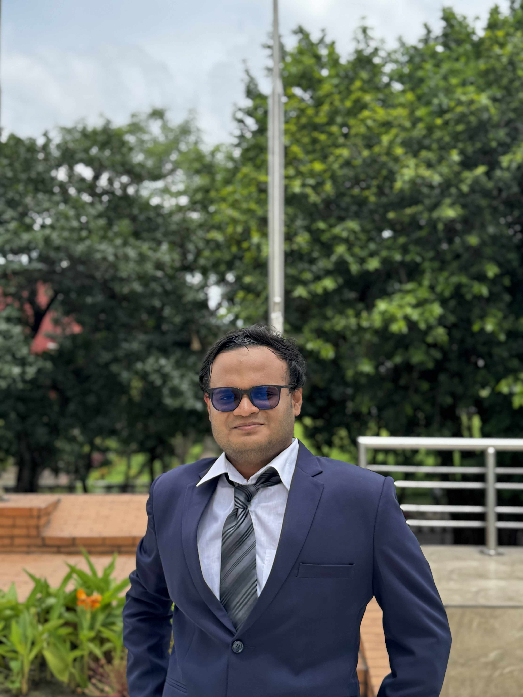

ICE Graduate · Research Assistant at BUP · Seeking Fully Funded Master's Research Assistantship
"Building interpretable, clinically deployable AI systems that earn the trust of both clinicians and patients."
I have graduated with a B.Sc. in Information and Communication Engineering from Bangladesh University of Professionals (BUP), with a CGPA of 3.72/4.00. My research is concentrated at the intersection of clinical AI interpretability, multimodal language models, and intelligent decision-support systems for healthcare.
As a Research Assistant at Bangladesh University of Professionals and Bangladesh Bank(The Central Bank of Bangladesh), I have contributed to 8 research works spanning fine-tuned clinical LLMs, hallucination-aware vision-language model reviews, XAI-driven diagnostic ensembles, and socio-culturally engineered smart grid forecasting, in collaboration with:
My work has been published or is under review in Taylor & Francis, the Journal of Machine Learning and Deep Learning, PLOS One, Franklin Open, and IEEE Xplore conference proceedings. I am actively seeking a fully funded Master's Research Assistantship to advance interpretable, clinically deployable AI systems within a strong research environment.
